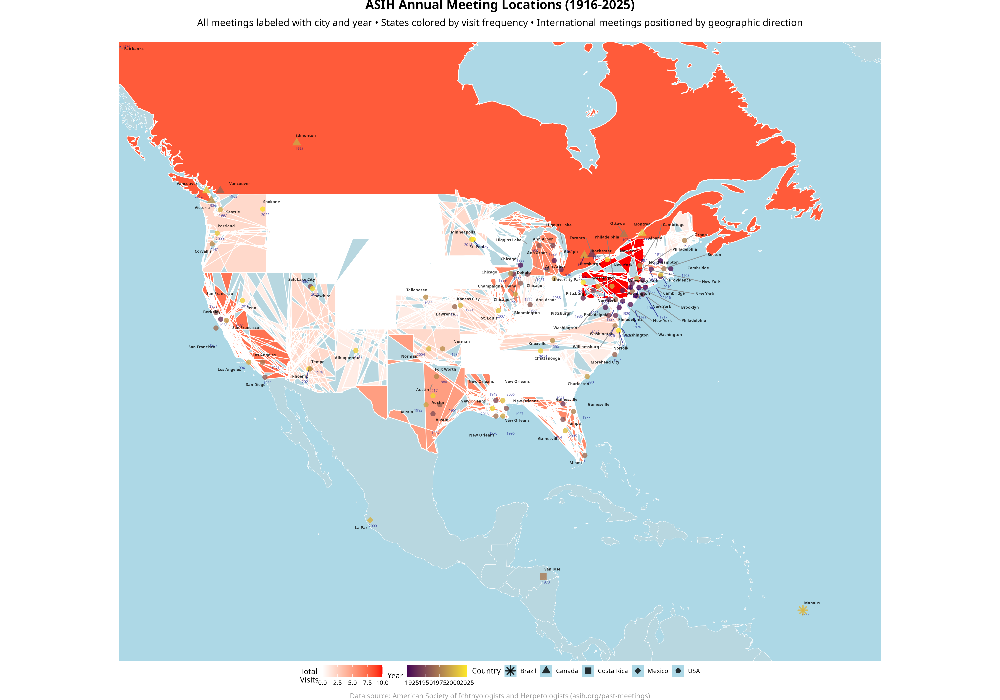

Overview
This project visualizes the locations of ASIH annual meetings from 1916 to 2025, featuring:
🗺️ Interactive Mapping
Leaflet-based maps with pan, zoom, and clickable meeting points
🎨 Temporal Visualization
Viridis color palette: darker points for older meetings, brighter for newer ones
🌡️ State Heatmap
US states colored white-to-red based on total meeting frequency
🌍 International Support
Non-US meetings positioned appropriately with fake state representations
🔗 Chronological Flow
Optional connecting lines with arrows showing meeting progression over time
📊 Smart Jittering
Overlapping locations (like New Orleans) separated for better visibility
🚀 Get Started
📊 Generate Your Own Visualization
# Clone the repository
git clone https://github.com/SimonDedman/AESconfLocations.git
cd AESconfLocations
# Install ggplot2 (only required package)
R -e "install.packages('ggplot2')"
# Generate the static visualization
R -e "source('generate_map.R')"
# This creates high-resolution PNGs in docs/ and output/ folders
That's it! The simplified approach uses only ggplot2 and base R functions, making it easy to run anywhere.

Interactive visualization showing 105 ASIH meetings from 1916-2025 across 28 US states and 5 countries
📋 Project Details
Data Source
Conference location data sourced from the ASIH Past Meetings page.
Technical Stack
- R - Data processing and statistical analysis
- ggplot2 - Static visualizations with viridis-inspired color palette
- Base R functions - Manual geocoding and data processing
- GitHub Pages - Static web hosting
- Minimal dependencies - Only requires ggplot2 for maximum portability
Key Features
- Clean, static visualization using only ggplot2
- Temporal color coding with viridis-inspired palette
- Smart jittering for overlapping meeting locations
- International meetings marked with distinct symbols
- Comprehensive statistics and city rankings
- High-resolution output suitable for presentations
📞 Contact & Contributing
This project was created for visualizing the geographic and temporal patterns of ASIH conference locations.
For questions, suggestions, or contributions, please visit the
GitHub repository.
Generated with 🤖 Claude Code